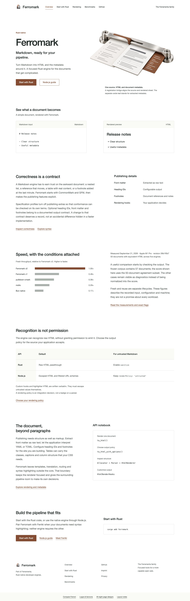
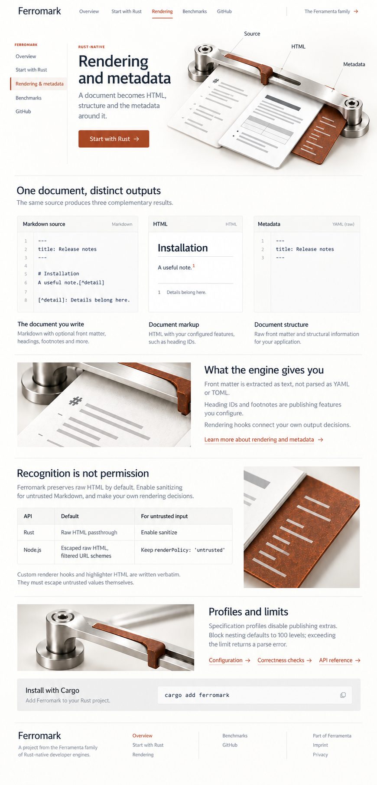
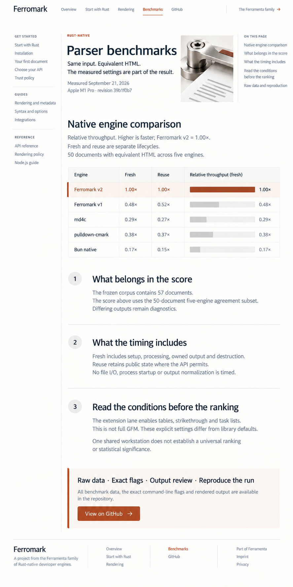
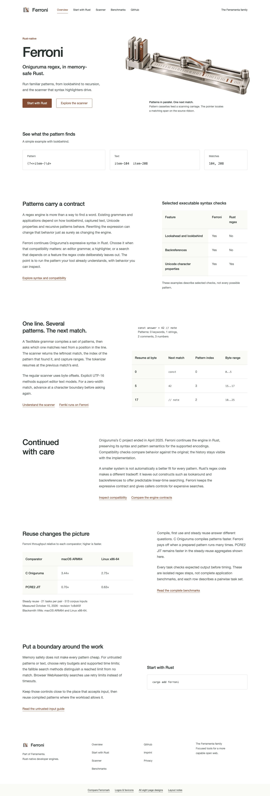
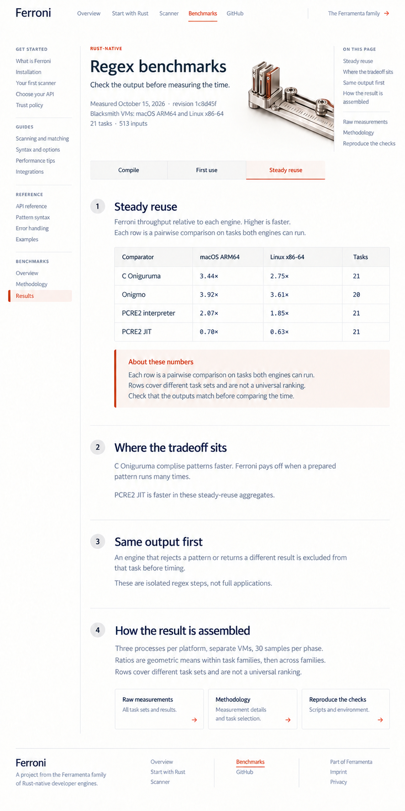
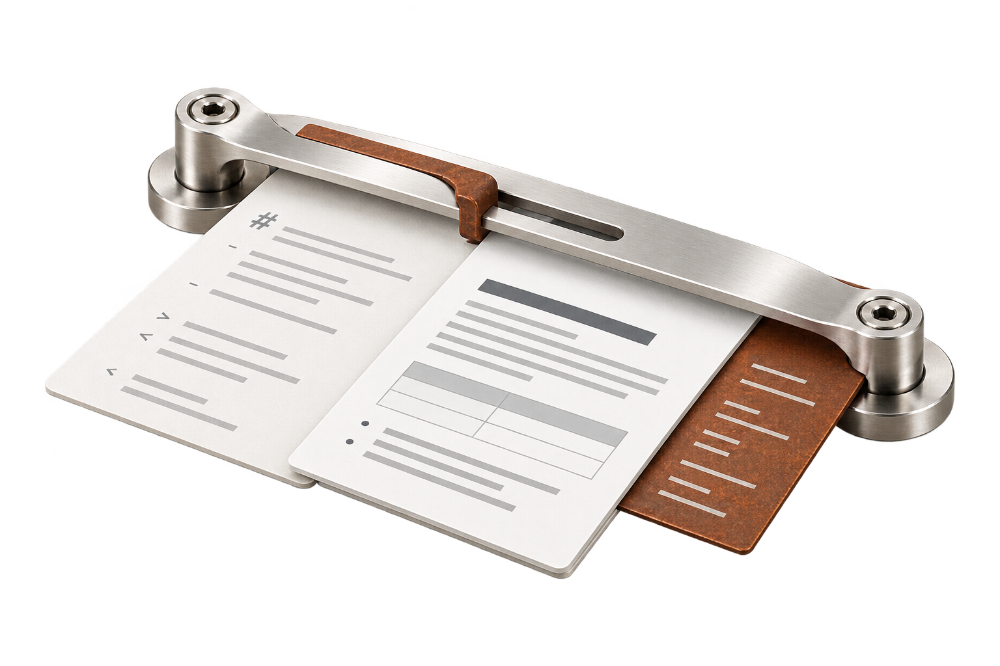
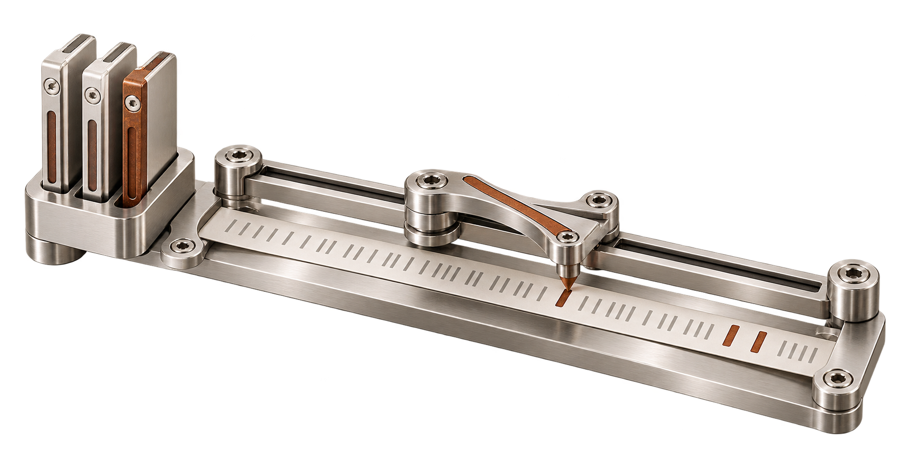

21 Overview
The full homepage: product explanation, working example, editorial stories and next actions.
Current Ferromark homepage · Current Ferroni homepage · Logos and favicons
Eight complete page designs developed from the selected steel bridge and calibration sheet, with content-led homepage bodies and meaningful project objects in the heroes.
A document registration instrument: source, rendered output and a separate metadata leaf.

The full homepage: product explanation, working example, editorial stories and next actions.

Installation, a first real example, API choices and important input defaults.

Source, HTML and metadata explained through the document register, with explicit trust policies.

Recorded data, provenance, comparison scope and the conditions behind the numbers.
A pattern comparator: parallel pattern cassettes, a scanning carriage and a match pointer.

The full homepage: product explanation, working example, editorial stories and next actions.

Installation, a first real example, API choices and important input defaults.

Parallel patterns, the next match, and byte versus UTF-16 positions.

Recorded data, provenance, comparison scope and the conditions behind the numbers.
The same instruments recur in overviews, details and explanatory pages. Both masters are independent transparent PNG assets.

A registration bridge aligns a source document with its rendered sheet; a separate thin index leaf represents document metadata.

Parallel pattern cassettes feed one scanning carriage; a pointer locates the next match on a text ribbon.